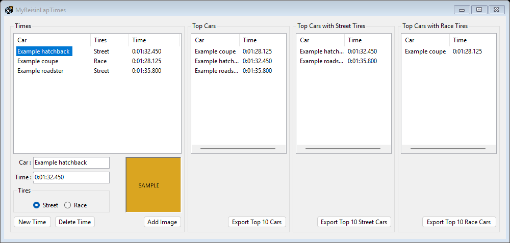

The details of a lap
Save each car's time, image and Street or Race tyre type.
Garage tools / Evilchuck666
Log a car, its lap time, a photo and the tyres it ran on. Keep the rankings together and turn the fastest ten into an image ready to share.
C# · WinForms · Windows

Save each car's time, image and Street or Race tyre type.
Compare overall results, street tyres and race tyres separately.
Export a 2700 × 2700 PNG with the top ten cars, photos and lap times.
Get started
Download the Windows executable and run it. The self-contained release includes its runtime. Enter a car and lap time, choose the tyres, add a photo and save the result.
SHA-256 checksums ↓ · Release notes & all downloads on GitHub ↗